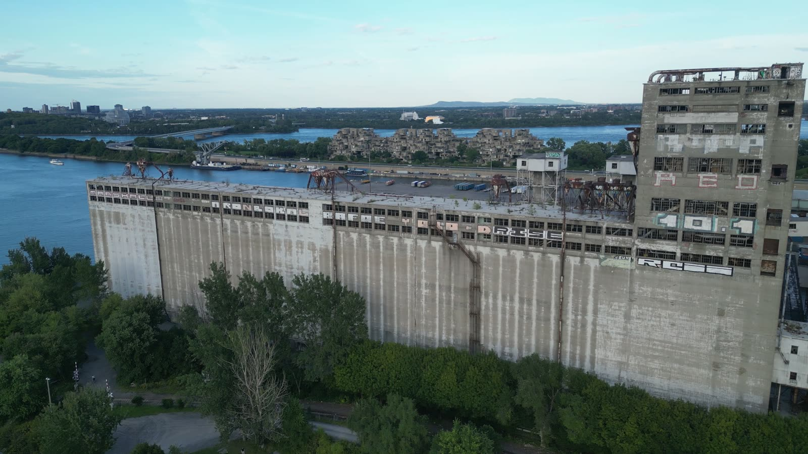

Location Lab
/
Silo No. 5
Draft · example marks and moves
21:9
16:9
9:16
Clean-angle map
Export pack

Drone frame stands in for the splat
Clean angle
24 mm
Mark still
Top view
Drone stood here
Top view of Silo No. 5 with drone positions along the river side, a green clean zone around them, an orange smear zone on the city side, and the current camera inside the clean zone.
City side
Silo
River side
Renders clean
Smears
Camera
Move 01 · Push along the river face
6.0 s · 4 keyframes · 24 mm fixed
Add keyframe
Render clip
0 s
1
2
3
4
5
6 s